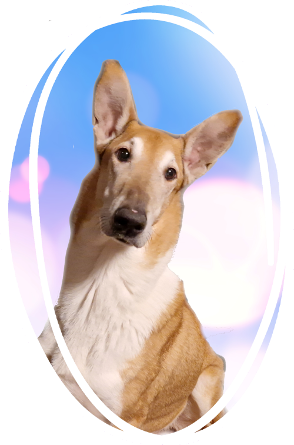

Late (10 v) - Sileäkarvainen Collie
- Syntynyt: 06.05.2013
- Luonne: Kotikoira, joka on aina valmis toimimaan, paitsi jos se liittyy veteen. Kaikkien ihmisten ystävä, erityisesti ruuan ystävä.
- Harrastushistoria: Kokeillut erilaisia lajeja ennen kotikoiraksi tuloa, kuten palveluskoiralajien viesti, agility ja näyttely
Late on pieni suuri hupulainen, aina menossa mukana ja aina on hyvä paikka kivettyä paikoilleen. Näyttely hommista sen verran sanon että ei sinne muka näin iso ja komea ukko kelvannut (karusellissa kuva minusta veljen kanssa 6kk ikäisinä), sanoivat että korvat osoittaa minne sattuu ja liian iso. Minusta hän on juuri sopiva, entä sinusta?